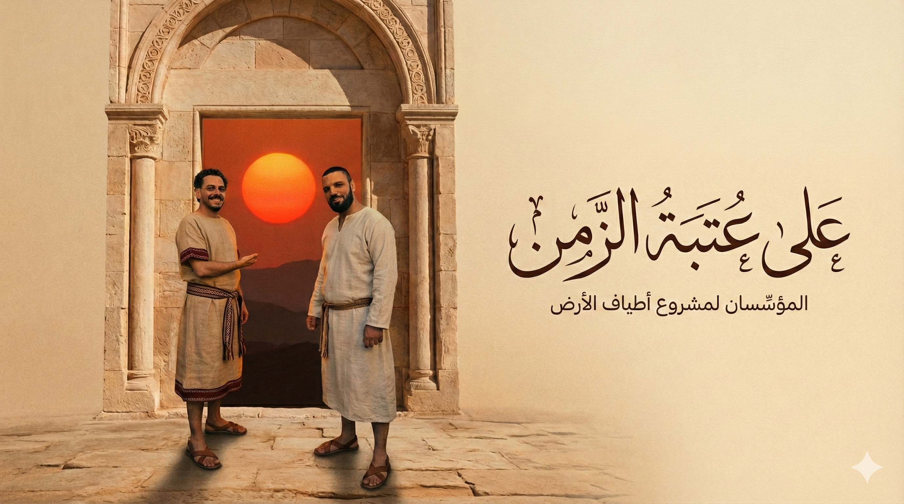

عن مشروع أطياف الأرض
أطياف الأرض هو مختبر بحثي وسردي فلسطيني طويل الأمد. نبحث في التاريخ العميق لهذه الأرض — من السكّان القدماء وحتى الناس اليوم — ثم نحول هذه المعرفة إلى أفلام وصور وموسيقى ومساحات تعلّم مدعومة بالذكاء الاصطناعي.
لماذا وُلد هذا المشروع؟
على مدى أكثر من قرن، تم اختزال قصة فلسطين في عناوين الأخبار والصراع والروايات المستوردة. جاء أطياف الأرض ليعمل عكس ذلك تمامًا:
- أن يبدأ من الأرض نفسها: طبقاتها، مناخها، وآثارها،
- أن يستمع إلى العلم: الجينات، والتاريخ، والأنثروبولوجيا،
- وأن يعيد وصل كل ذلك بالفلسطينيين الذين يعيشون هنا اليوم.
هدفنا ليس الحنين، وليس الدعاية. هدفنا بناء سردية حذرة ومُحكمة المصادر، تُظهر الفلسطينيين كشعب مستمر في هذه الأرض منذ آلاف السنين.
المؤسِّسان
محمد أبو معيلق كاتب وباحث ومتخصص تربوي، بالإضافة إلى كونه صانع صور بصرية بالذكاء الاصطناعي. يركّز على القصص الإنسانية والذاكرة والتفاصيل اليومية في فلسطين، وعلى تحويل الأفكار المعقدة إلى سرديات وتجارب تعلم بسيطة وقابلة للمشاركة.
تامر منصور صانع محتوى بصري بالذكاء الاصطناعي، ومُدرِّب ومستشار. يبني مسارات عمل تجمع بين البحث، وكتابة النص، وتوليد الصور والفيديو، والأدوات التفاعلية، مع تركيز خاص على التاريخ والهوية الفلسطينية.
معًا أسّسا أطياف الأرض كمساحة يلتقي فيها:
- البحث العلمي الدقيق،
- مع الطموح السينمائي في الصورة والصوت،
- ومع رؤية ترى الذكاء الاصطناعي شريكًا في الإبداع لا بديلًا عن البشر.
كيف نعمل؟
يتحرك المشروع عبر ثلاثة مسارات مترابطة:
-
مختبر الأبحاث
دراسات في الاستمرارية الجينية، وأبحاث أثرية وتاريخية، وتواريخ اجتماعية وثقافية للحياة اليومية في فلسطين. يتم توثيق كل مسار بحثي وتنظيمه في أدوات مثل NotebookLM، بحيث يمكن للآخرين استكشاف المصادر لا الاكتفاء بالنتائج. -
الوسائط والتجارب
أفلام ومشاهد قصيرة مكتوبة، وسلاسل بصرية وجداول زمنية مصوّرة، وموسيقى ومشاهد صوتية مستوحاة من كل حقبة. يُستخدم الذكاء الاصطناعي للمساعدة في التخيل والتجريب، مع مراجعة دائمة للمصادر والأعمال العلمية. -
الشباب والمجتمع
تدريب فريق صغير من الشباب على المساعدة في البحث، وإدارة منصات المشروع وتوثيق رحلته، وفتح أجزاء من العملية أمام المدارس والورش والمبدعين المحليين.
أين وصلنا الآن؟
ما زالت المرحلة الأولى من أطياف الأرض قيد التنفيذ. حاليًا نعمل على:
- استكمال مسارات البحث الأولى (مثل دراسات الاستمرارية الجينية)،
- تشكيل اللغة البصرية الأساسية للمشروع،
- بناء الموقع ومساحات البحث المفتوحة للجمهور،
- وتصميم المسار التدريبي الأول لفريق الشباب.
المشروع مصمم ليكون مرنًا. يمكن أن يتطوّر إلى سلسلة وثائقية كاملة، أو مجموعة أفلام قصيرة، أو حقائب تعليمية للمدارس، أو أرشيف بحثي بصري — حسب الشركاء والدعم الذين ينضمون إليه.
دعوة
إذا كنت باحثًا أو فنانًا أو معلّمًا أو مختصًا في التكنولوجيا، أو فردًا من الشتات الفلسطيني يهتم بالعمل العميق طويل الأمد على هذه الأرض، يسعدنا أن نتواصل معك.
يمكنك التواصل معنا عبر صفحات الدعم و اتصل بنا، أو متابعة تطوّر المشروع من خلال أقسام الأبحاث و الوسائط و التحديثات.